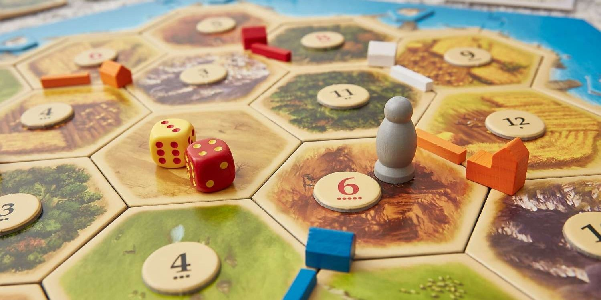
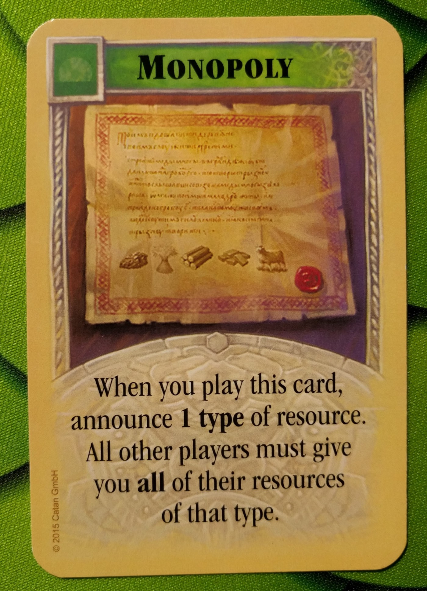

So you want to beat your friends in Catan? The Settlers of Catan is a game of luck and strategy, although no promises that this post will make you luckier, it just might be able to help you improve your strategy.
First, a brief reminder of the game
The goal of the game is to gain 10 victory points by building settlements, cities, roads, and obtaining development cards. To do all this you will need resources, which are gained according to what numbers are rolled on the dice each round and where your settlements are located.
Lets talk strategy
Although you may find success going for a balanced approach, this may
not be the most effective path to victory. Here's some more
specialised approaches you can utilise to guide your gameplay.
Wood 🪵 and brick 🧱. This approach focuses on building roads and
settlements. This approach is good if you have a lot of wood and brick
early on to fuel rapid expansion. This expansion not only sets you up
for the longest road but can also cut off opportunities for other
player.
Ore 🪨 and wheat 🌾. This approach focuses on building cities and
buying development card. This approach is good if you have a lot of
ore and wheat early on to upgrade your settlements to cities and
obtain more resources. Ore and wheat are also good for buying
development cards, which can be used to gain resources, build roads,
or gain victory points.
Monopoly 🎩. This approach focuses on monopolizing a resource. This is
not the easiest to pull off, but if you can get a monopoly on a
resource, you can use it to your advantage in trades. Brick and ore
are usually the best resources to monopolize, as there are 3 tiles
each.
Port 🛥️. This approach focuses on getting access to 2 for 1 ports and
trading with the bank. For this to work, you need settlements or
cities that give you the corresponding resource for 2 for 1 ports that
are accesible to you.
Initial Settlements
As you may have seen, the approaches above all require certain
resources and board states to be effective. This means that you should
be careful about where you place your initial settlements. Here are
some things to consider.
Consider the rarity of resources on the board, you should determine
which overall approach you want to take and choose settlement
positions which allow you to act on it right away. The total of the
values of tiles at the intersections and the total of the values of
particular resources on the board is a good way to figure out an
overall approach.
If you require resource B, sometimes it might be better to settle at a
high number tile for resource A and trade 4 to 1 at ports for resource
B, than getting the lower number resource B tile.
It is also important to have a diverse range of tile numbers so you
don't go on long dry spells.
Development Cards

The Monopoly card allows the player to steal all of any one resource
from all other players. It is the most fun card to use, but also the
hardest to use correctly. To make the most of it, you should try to be
aware of resources other players pocess so you can maximise the amount
of resources you steal.
Alternatively, you can trade away a resource you have plenty of and
then take it all back with the monolopy card. PS. Use wisely as it
might make trading with other players for rest of the game much harder
🙂.